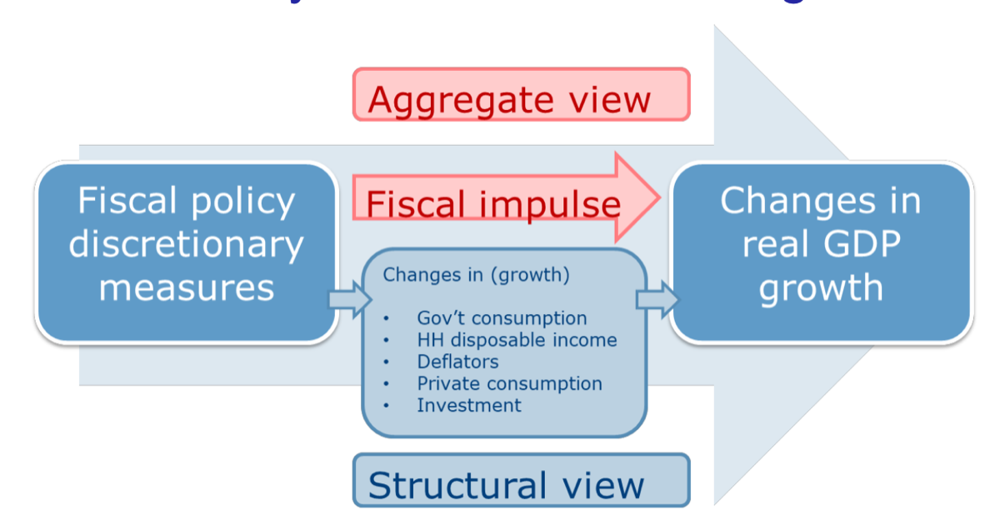

3.2 — Is There Fiscal Dominance in Czechia?
Chapter 3: Fiscal-Monetary Policy Nexus
The Context: Post-Covid Inflation
The Czech price level went up more than in most other European countries between 2019 and 2024. At the same time, the fiscal situation got much worse. This raised the question: how much was inflation caused by loose fiscal policy, or even by a fiscal dominance problem?
The recent "Great Inflation" episode has increased interest in the Fiscal Theory of the Price Level (FTPL). Unlike standard monetarist theory (which says inflation is always caused by too much money), the FTPL says that the price level depends on the government's long-term budget situation.
"The centerpiece of the FTPL is the government's intertemporal budget constraint, which equates the market value of the initial real public debt to the present value of expected real primary surpluses."
Barro & Bianchi (2023) suggest that higher government spending could explain why the inflation spike in the Czech Republic was so big. But does this explanation make sense? Let's look at the evidence.
Covid-Related Budget Deficits & Consolidation
| Period | Fiscal Development | Key Drivers |
|---|---|---|
| 2020 | Fiscal balance deteriorated sharply | Covid pandemic + large-scale one-off measures (lockdown support, wage subsidies) |
| 2021–2022 | Recovery held back | 2022 Russian invasion of Ukraine + energy cost crisis; additional fiscal support needed |
| 2023 | Gradual consolidation | More gradual pace than the 2012–2013 consolidation episode |
| 2024+ | Positive impact of consolidation package | Government consolidation measures → Czechia avoided excessive deficit procedure (EU) |
Public Debt Trajectory
📊 What Happened
- Public debt rose sharply in 2020 due to the Covid pandemic and other measures
- The rise continued in 2021 and 2022
- In 2024–2026, debt is set to increase only slowly due to improved fiscal balance and renewed economic growth
📐 Key Figures
- Debt ratio is currently approaching ~45% of GDP
- Still well below the thresholds of national as well as EU legislation
- The 55% debt brake level may be reached in the next 5–7 years
- But: FTPL explanation of the inflation spike seems unlikely at these debt levels
Lesson from History: The EA Sovereign Debt Crisis
The Eurozone crisis of 2010–2012 is the clearest recent example of self-fulfilling fiscal dominance. Yields on 10-year government bonds jumped sharply for weaker countries:
| Country | Peak 10Y Yield | Pre-Crisis (~2006) | Context |
|---|---|---|---|
| 🇬🇷 Greece | ~30% | ~4% | Massive fiscal deficit, debt restructuring, bailout |
| 🇵🇹 Portugal | ~15% | ~4% | Low growth, high deficit, required EU/IMF program |
| 🇮🇪 Ireland | ~14% | ~4% | Banking crisis → sovereign crisis, bailout |
| 🇮🇹 Italy | ~7% | ~4% | High legacy debt, low growth, contagion from Greece |
| 🇪🇸 Spain | ~7% | ~4% | Housing bust, banking sector stress |
| 🇩🇪 Germany | ~1.5% | ~4% | Flight to quality → yields fell |
The Maastricht criterion for bond yields (needed to join the Euro) is below a certain level. During the crisis, several countries went far above this limit — showing how fast worries about fiscal health can turn into a full crisis.
Fiscal-Monetary Nexus in Practice: The Czech Case
How do fiscal and monetary policy actually interact in Czechia? The institutional framework is designed to prevent fiscal dominance:
-
Strong CNB independence
The Czech National Bank (CNB) is strongly independent from the government. There is a prohibition of taking instructions from any political entity and a prohibition of monetary financing. The Finance Minister may participate in Board meetings but cannot vote.
-
No explicit coordination
There is no formal coordination between monetary policy and government economic policy. Fiscal policy is run by the government on its own. Monetary policy takes fiscal changes into account, but as an outside input — it doesn't follow fiscal needs.
-
Fiscal discretion as forecast input
The CNB treats fiscal decisions (government fiscal measures) as an outside input in its economic forecasts. The overall CNB fiscal outlook must fit with its main forecast, but the CNB does not try to influence fiscal decisions.
-
No seigniorage or profit transfers
So far there have been no seigniorage or profit transfers from the CNB to the government — a clear sign that monetary financing has not happened.
How Fiscal Policy Enters CNB's Forecasting

The diagram above shows how fiscal policy affects GDP growth, as the CNB models it:
Fiscal Policy Measures
Choices made by the government: changes in tax rates, spending programs, transfers, subsidies, etc.
Fiscal Impulse
The effect on the economy through changes in: public consumption, household disposable income, private consumption, investment, and price levels.
GDP Growth Impact
These effects translate into changes in real GDP growth. Two approaches: aggregate view (total effect) and structural view (specific transmission channels).
| Feature | Detail |
|---|---|
| Core model | Does not have a complete fiscal section — fiscal effects are added by experts |
| Government consumption | Directly included in the forecast |
| Fiscal impulse | Uses fiscal multipliers for sub-categories of revenues and expenditures |
| Baseline scenario | Only well-specified and (likely to be) approved measures are included |
| Alternative scenarios | Other measures under discussion could be part of alternative scenarios |
The Czech case illustrates the textbook regime (MP active + FP passive): the CNB independently controls inflation, treats fiscal policy as a given, and does not print money for government debt. The answer to "is there fiscal dominance in Czechia?" is no, at least not right now — but long-term fiscal health is not guaranteed without more policy action.
Czechia does not have a serious fiscal dominance problem. The CNB is very independent, there is no monetary financing, and debt levels are below EU limits. However, long-term fiscal health is not guaranteed without more policy action. The FTPL explanation for Czech inflation is unlikely given the relatively moderate debt-to-GDP ratio (~45%).